During training at the portal, I was tasked to recreate a smaller scale
version of the website Trello under the project name Prello. Prello was the
project that taught me a lot of the fundamental skills as a programmer including
traversing and manipulating the DOM using javascript, using jquery to make ajax
calls to our local server, creating session cookies, using socketio, using nodejs,
setting up the backend and routing with express, setting up mongodb on our local machines,
and setting up the models for mongodb using moongoose.
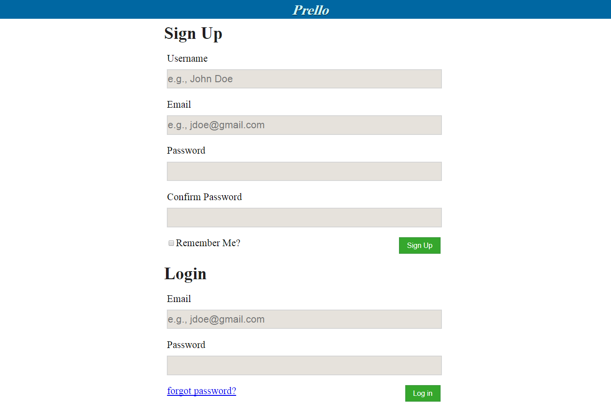
The sign forms use authentication in order to make sure a user inputs a
a valid email address, and that both passwords match. Creating an account also
decrypt's the users password in order to make sure backend admins cannot view
their passwords as well as any potential hackers. The login form checks to see if
the user exsits and if they do, creates a sessions cookie which allows the user
to use the website. If a user tries to view a page without logging in first,
the user is redirected back to the login page. Finally, the login page has a
forgot password icon that lets users change their password if they forgot their
password.
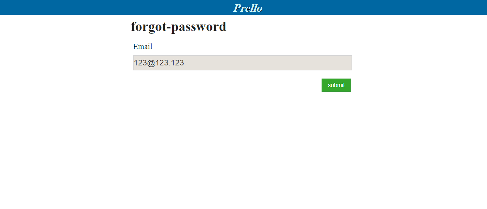
A user who may have forgotten their password can use the forgot password link
to reset their password. The link will send an email to the user with a temporary
website route that lets the user change thier password. After changing their password
or clicking forget password again, the temporary route expires.
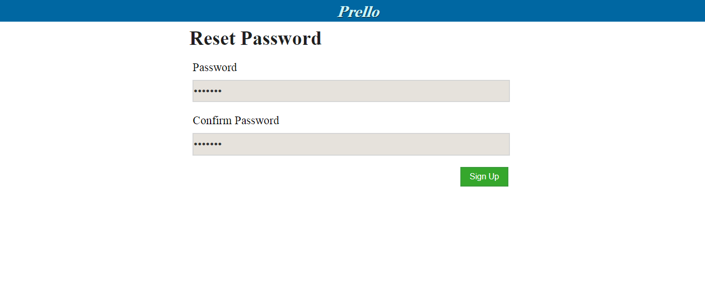
Reset password is a form field which will allow the user to change their password
for their respective email. Once the form is submitted the page redirects the user
back to the login screen and removes the reset password link from the database.
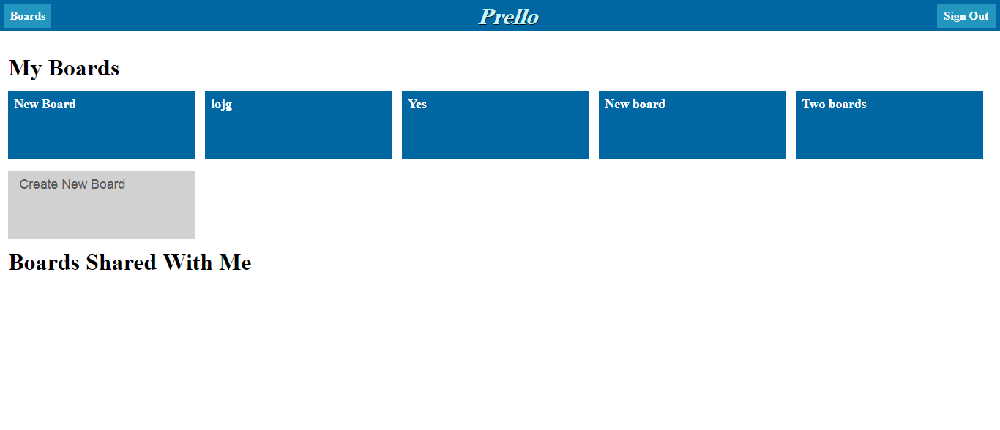
The boards page can be seen as the dashboard page for the website. The boards page
is used to keep track of different projects in the shape of "boards" with basically
to do lists. In the boards page, a user can add boards, see the boards they own,
and access other boards they have been added to.
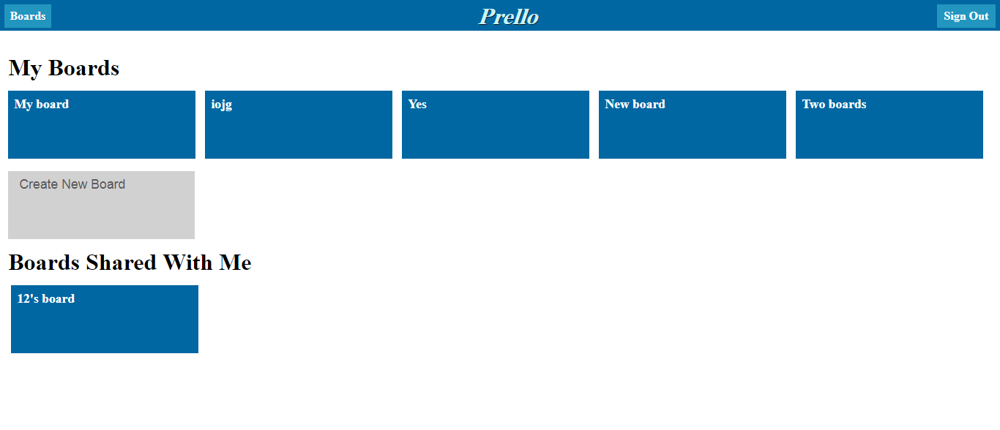
Boards can be shared with other users they wish to collaberate with. When a user
adds another user to their individual board, the other user will then see the
board under shared boards. In the database I have a permissions field which
contains all the other boards a user can view. If a user tries to view a board
they are not invited to, they are redirected back to their dashboard.
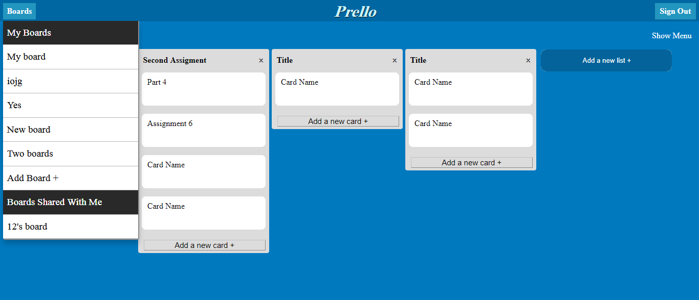
In the navigation bar, the boards button lets users view all their boards and any
boards that have been shared with them. The boards button is located on both the
boards page and the individual boards pages themselves like in the picture. The
navigation bar was made through ejs, an html templeting framework to prevent reusing
the same code over and over.
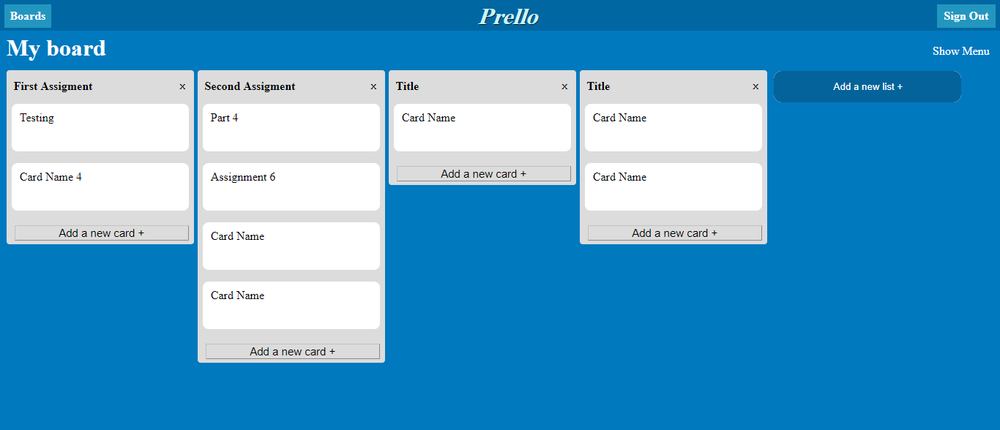
The board page contains an id in the url in order to route the specific board
the user wants to access. In the previouse page, each board button contains an id
which is then put in the url of the board page. Using the id, the board page
then renders all the different lists and cards that belong to that board. In the
board page a user can add a list, change the list title, delete a list, add a card,
and delete a card. This, along with the cards, was the bulk of the project where
I had to learn how to be able to GET, PUSH, DELETE, and PATCH objects in the database
and after retrieving the information, rendering the objects in html and css.
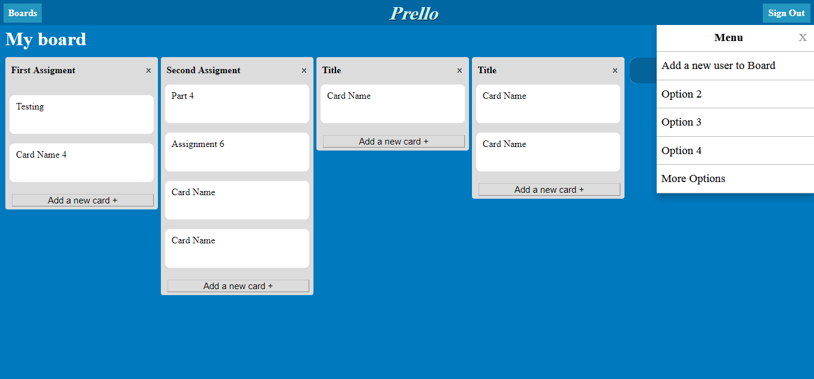
On the right side of the page, the menu button would display a dropwdown
with options. The only option I implemented in my version of prello was to
allow users to add other users to their board.
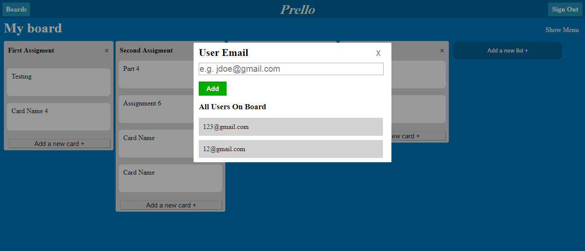
The "add users to board modal" allows users to add other users by email. If
the email does not exsist the user is promted with an error message of the
user does not exsist or the user is already a part of the board. The user
who is added will then be able to view the boards that were shared with them.
At the bottom of the card modal a user is able to delete the card once it is
finished or no longer needed.
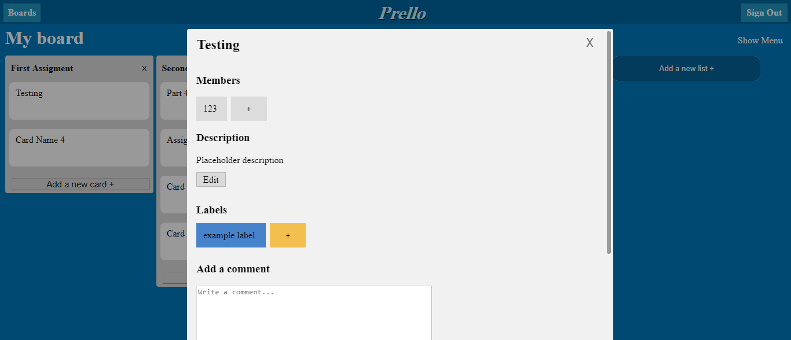
The card modal lets the user edit the individual cards within the different
lists they have created. The user can edit the title by clicking on it and
changing the text. The user can assign members to the card by clicking on the
+ button. The user can also remove members from the members list by hovering
over a member and clicking them. The description can be edited by clicking on
the edit button. After they finishing editing the description of the card the
user can click save to save their new description.
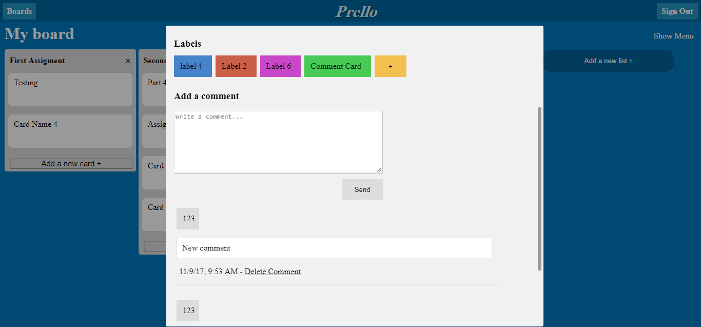
The card modal also contains labels. Labels work similar to memebers as a
user can add a label to the project by clicking the + sign and then be able
to remove the label by hovering over the individual label and clicking it.
The modal also allows users to add a comment to the card.
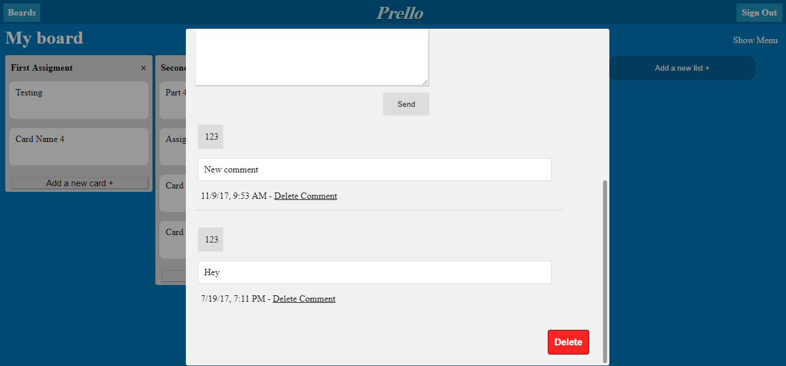
A card can contain any number of comments. Comments within the card modal
consist of an author, the comment itself, date, and a delete comment button.
The comments are displayed in order of the date they were created. The author
tag shows which user made the comment. Delete comment lets users delete a
comment from the database.